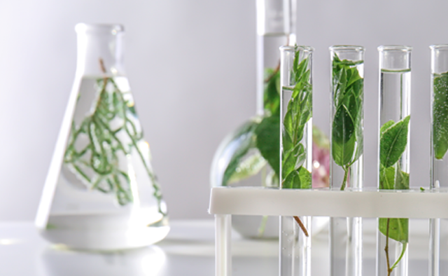
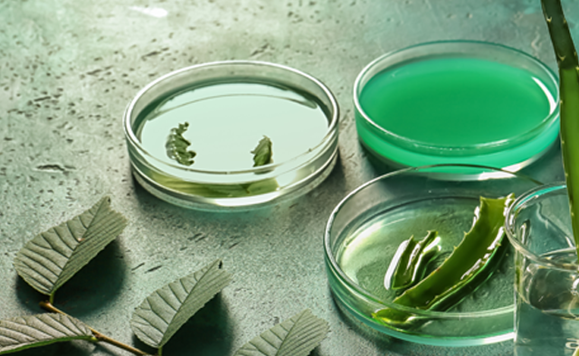

계열사 소개
이전 페이지 이동
다음 페이지 이동
New Mechanism of Bio-Industry
국내 유일의 진단, 신약 개발, 제약 및 건강기능식품 생산과 유통까지 바이오 메디컬 사업의 수평 계열화로 토탈 원스톱 서비스가 가능한 바이오산업의 새로운 기준을 제시합니다!
Group company
TOTAL ONE-STOP SERVICE
Bio Leaders
신약개발/제품개발
독자제조기술을 이용한 폴리감마글루탐산
원료생산과 건강기능식품, 화장품 기획/개발/판매
more

TCM
진단의료기기 전문기업
가인패드를 통한 여성질환 신환자
발굴 및 신약 판매처 확보
more
NEXT BT
의약품 생산 제조
건강기능식품, 화장품 산업의 연구&제조에서 판매까지 Total Solution 제공
more

Natural F&P
건강기능식품 유통
식약처 GMP인증 1호 기업 건강기능식품 및 기능성화장품 제조 유통
more